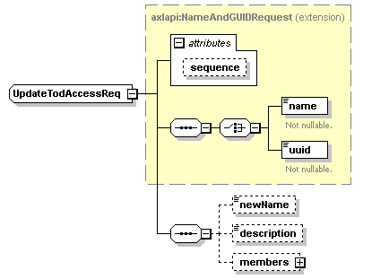
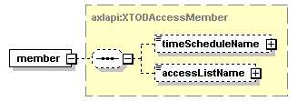

| diagram |  | ||||||||||||
| namespace | http://www.cisco.com/AXL/API/10.5 | ||||||||||||
| type | extension of axlapi:NameAndGUIDRequest | ||||||||||||
| properties |
|
||||||||||||
| children | name uuid newName description members | ||||||||||||
| used by |
|
||||||||||||
| attributes |
|
||||||||||||
| source | <xsd:complexType name="UpdateTodAccessReq"> <xsd:complexContent> <xsd:extension base="axlapi:NameAndGUIDRequest"> <xsd:sequence> <xsd:element name="newName" type="axlapi:String128" nillable="false" minOccurs="0" maxOccurs="1"/> <xsd:element name="description" type="axlapi:String255" nillable="false" minOccurs="0" maxOccurs="1"/> <xsd:element name="members" minOccurs="0" maxOccurs="1"> <xsd:complexType> <xsd:sequence minOccurs="0"> <xsd:element name="member" type="axlapi:XTODAccessMember" minOccurs="1" maxOccurs="1"/> </xsd:sequence> </xsd:complexType> </xsd:element> </xsd:sequence> </xsd:extension> </xsd:complexContent> </xsd:complexType> |
| diagram | |||||||||
| type | axlapi:String128 | ||||||||
| properties |
|
||||||||
| facets |
|
||||||||
| source | <xsd:element name="newName" type="axlapi:String128" nillable="false" minOccurs="0" maxOccurs="1"/> |
| diagram | |||||||||
| type | axlapi:String255 | ||||||||
| properties |
|
||||||||
| facets |
|
||||||||
| source | <xsd:element name="description" type="axlapi:String255" nillable="false" minOccurs="0" maxOccurs="1"/> |
| diagram | |||||||
| properties |
|
||||||
| children | member | ||||||
| source | <xsd:element name="members" minOccurs="0" maxOccurs="1"> <xsd:complexType> <xsd:sequence minOccurs="0"> <xsd:element name="member" type="axlapi:XTODAccessMember" minOccurs="1" maxOccurs="1"/> </xsd:sequence> </xsd:complexType> </xsd:element> |
| diagram |  | ||
| type | axlapi:XTODAccessMember | ||
| properties |
|
||
| children | timeScheduleName accessListName | ||
| source | <xsd:element name="member" type="axlapi:XTODAccessMember" minOccurs="1" maxOccurs="1"/> |